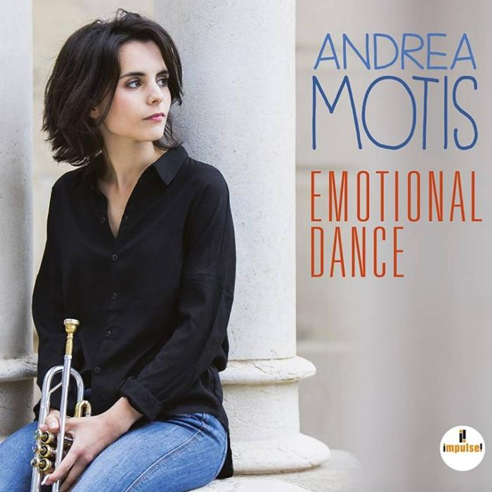

ABOUT#
Background information (배경)
출생: 1995년 5월 9일 (27세) 스페인
바르셀로나
장르 :
Jazzbossa nova, swing, straight-ahead jazz
직업 :가수,음악가
악기 :
트럼펫,소프라노와 알토 색소폰, 보컬
활동 : 2010년 ~ 현재
레이블 : Impulse!
Biography(전기)
7살 때부터, 모티스는 산 안드레우 (바르셀로나) 시립 음악 학교에서 음악적으로 발전했습니다.
2007년 12살 때, 그녀는 선생님이자 음악가인 조안 샤모로가 이끄는 산 안드레우 재즈 밴드에서 연주하기 시작했습니다.
2010년 15살 때, 그녀는 재즈 표준 앨범인 조안 차모로 프레젠트 안드레우 모티스를 녹음했습니다, 바비 고든이 출연했습니다.
2012년, 그녀는 두 번째 앨범을 녹음하기 시작했고, 2014년 피자 익스프레스 재즈 클럽에서 모티스가 연주했을 때 필링 굿 존 포덤은 "모티스는 진주 같은, 거의 숨을 내쉬지 않는 목소리를 가지고 있으며, 멋진 즉흥적인 스윙과 캐주얼한 타이밍을 가지고 있으며, 재즈 스타들이 만들어지는 것입니다.
2015년 11월 1일부터 4일까지 보스토와 뉴욕에서 열린 "아디오스" 투어 콘서트에서 모티스(tp, sax, voc), 샤모로(b, ts), 조셉 트래버(g)가 오르퀘스타 부에나 비스타 소셜 클럽의 오프닝 공연으로 모티스와 함께 앙코르로 도스 가든시아를 불렀습니다. 2019년, 모티스는 감성 댄스(Impulse!, 2017)로 메이저 레이블 데뷔를 했고, 두루라도 도아줄은 브라질 노래와 그녀 자신의 작곡으로 그 뒤를 이었습니다.
2019년 9월 25일, 그녀는 모티스와 함께 바르셀로나 프로젝트의 날을 시작했습니다. 그들은 파우 카살(첼로)에 의해 세계적으로 유명해진 카탈루냐 민요인 엘칸트 델스오셀스의 듀엣을 공연했습니다. 이 듀엣곡은 요요마의 앨범 Notes For The Future에 실렸습니다. 2021년, 모티스, 마이크 모스만, WDR 빅 밴드 쾰른이 Colors & Shadows를 제작했습니다.
Stunces (2022)는 모티스가 오스트리아의 재즈 바이올리니스트인 남편 크리스토프 말링거와 공동으로 지휘하는 동명의 5중주곡의 앨범입니다
Discography(음반)
음반
- ● Joan Chamorro presenta Andrea Motis (Temps, 2010)
- ● Motis Chamorro Quintet Live at Jamboree featuring Scott Hamilton (Swit, 2013)
- ● Live at Casa Fuster (2014)
- ● Feeling Good with Joan Chamorro (Temps, 2012; Whaling City Sound, 2015)
- ● Coses Que Es Diuen Però Que No Es Fan, NewCat, Andrea Motis Joan Chamorro (DiscMedi, 2015)
- ● Motis Chamorro Big Band Live (2015)
- ● Joan Chamorro presenta La magia de la veu (Jazz to Jazz, 2015)
- ● Live at Palau de la Música (Jazz to Jazz, 2015)
- ● He's Funny That Way (Impulse!, 2016)
- ● Joan Chamorro presenta La magia de la veu & jazz ensemble (Jazz to Jazz, 2016)
- ● Emotional Dance (Impulse!, 2017)
- ● Do Outro Lado Do Azul (Verve, 2019)
- ● Loopholes (2022)
Collaborations (콜라보레이션)
Collaborations
- º Marato de TV3 (TVC 디스크, 2011)
- º Miles Tribute Big Band: Sketch of Catalonia (Mas i Mas, 2015)
- º Ramon Tort: Andrea Motis, La Trompeta Silenciosa - una historia sobre el triunfo de la sencillez (dvd 2019)
- º Sant Andreu Jazz Band: Jazzing 12 vol 2 (Temps Record, 2021)
- º Andrea Motis, WDR Big Band Cologne, Mike Mossman: Colors & shadows (Jazzline, 2021)
- º Yo-Yo Ma: Notes For The Future (소니, 2021, 다운로드 및 스트리밍)
- º 조안 차모로: 조안 차모로 프레젠타의 빅 밴드 (Jazz To Jazz, 2022)
- º 조안 차모로: Toni Belenguer를 기리며 (Jazz To Jazz, 2022)
Andrea Motis
트럼펫은 전문가들도 연주 중에 입술에 상처가 나기도 하는 등 다루기 쉽지 않은 악기다. 여성 트럼펫 연주자, 그중에서도 재즈 신에서 이름있는 여성 연주자를 찾기란 무척 힘들다. 하지만 이제 겨우 스물 네살의 스페인 바르셀로나 출신 안드레아 모티스(Andrea Motis)는 트럼펫과 색소폰을 연주하며 노래까지 한다. 10대 시절부터 일찌감치 많은 연주 경력을 쌓아, 얼마 전에는 전통의 메이저 레이블 임펄스(Impulse!)에서 음반
그녀는 일곱 살에 바르셀로나 인근의 시립학교에 입학해 학교 밴드에 들어갔다. 어린 그가 알고 있던 바이올린이나 피아노 같은 인기 악기는 이미 자리가 없어서, 집에 있던 아버지의 트럼펫을 들고 밴드에 입단했다. 1년 후에 다른 악기로 옮길 수 있었으나, 그녀는 트럼펫이 좋아 리드 트럼펫 연주자가 되었고 색소폰도 함께 연주했다. 열두 살에는 그의 스승이 된 재즈 베이시스트 조안 차모로(Joan Chamorro)가 이끄는 청소년 재즈 밴드 Sant Andreu Jazz Band에서 전문적인 연주 생활을 시작해 9년을 함께 했다. 나이 열다섯에는 스승과 함께 자신의 이름을 내건 첫 앨범
그녀는 루이 암스트롱과 쳇 베이커를 따라 보컬 재능도 함께 키웠다. 그의 목소리는 노라 존스와 비슷하다는 평가를 듣는다. 비브라토를 줄이고 깔끔하고 매혹적인 톤으로 차분하게 노래하는 스타일 또한 닮았다. 그녀는 자신의 고향 스페인에서는 어릴 때부터 스타의 반열에 올랐고, 유럽의 재즈 페스티벌에도 부지런히 참여하여 자신의 이름을 알렸다. 그의 명성을 전해 들은 퀸시 존스는 자신이 기획한 뮤지컬 프로젝트 Global Gumbo All-Star의 일원으로 안드레아를 초빙하여, 그에게 알프레도 로드리게스, 에스페란자 스폴딩 같은 젊은 재즈 스타들과 함께 연주하는 영광을 안겼다. 이제 그의 목표는 재즈의 본고장 미국을 향하고 있다.
그의 미국 진출에는 전통의 메이저 재즈 레이블 임펄스(Impulse!)가 나섰다. 고국에서 여러 장의 음반을 낸 그녀는, 미국에서